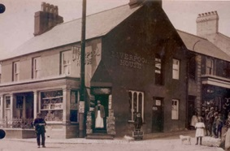
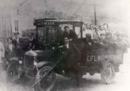
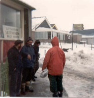
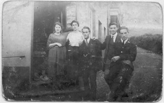

Post Office
Liverpool House was Llithfaen’s Post Office, ran by William Evans, according to the 1881 census, and by the turn of the century, his son in law, W.H. Roberts, ran the Post. He would also carry goods to Nant Gwrtheyrn. Later, Mrs Dinah Owen kept an eye on things for several years. The last family to run a shop here were the Jordans. The lads in the village used to socialise and gather here. After closing as a shop, the building was bought by Ymddiriedolaeth Nant Gwrtheyrn as an office.
W H Roberts, the postmaster by the door of the Post circa 1910.
Dewi Williams, Brynmor, remembers Alun Roberts, Post, converting his lorry into a bus to carry people back and forth to Pwllheli. W.H. Roberts was postmaster around 1910 (he was Alun Roberts’ father). They used to carry goods to Nant Gwrtheyrn in a small truck. Alun Roberts ran the bus to Pwllheli between 1915-20.
W.H. Roberts was a very learned man. There’s a record in ‘Yr Herald Gymraeg’ in 2 January 1914, that he gave an illustrated lecture with Robert John, Bryn Meirion, entitled ‘Eighty years of Victoria’s reign.’ He also conducted the village’s children choir, it had 45 members.
Ellen Evans, Alpha remembers:
Before long, three shops were established in the village, and one of them sold everything imaginable. Goods were taken into the shop by cart, from the ‘Rebecca Mary’, a ship from Pwllheli. This ship bought the goods to Pwllheli from Liverpool. The cart came to the shop every Tuesday, and the ‘Herald Cymraeg’ came on the cart from Pwllheli. One lady came from shop with the Herald, and hurried around, going about her business, until one of her neiighbours stopped her, asking ‘What have you got there?’ ‘Yr Herald’ she said. ‘Oh!’ he said, ‘the shopkeeper was busy all afternoon reading it before you.’ She then turned, and went back into the shop, slammed the paper on the counter and demanded that she wanted her money back, because that he had read her paper. It was here that the postman set up shop, and delivered mail to the villagers, after coming from Pwllheli with a pony and trap.
The last people to run the Post in Liverpool House, was Mrs Owen and her daughter. After the shop closed, the building was bought by Ymddiriedolaeth Nant Gwrtheyrn, and they used it as an office.
One of the first buses in Llithfaen circa 1920.
Alun Roberts, W H Roberts, the postmaster’s son on one of the first buses in Llithfaen circa 1920. He is leaning on th e bus’ door, his cousin Tudor Evans, Manchester House behind him. The bus is a Ford ‘left hand drive’. It cost £500 and came from Braids, Colwyn Bay. Petrol, in those days, cost 10 pence a gallon, and a licence was 15 shillings. This picture was taken in Pen Pistyll. Standing on the left is Mary Williams, Pengraig (Crump after she married) Augusta Roberts, Liverpool House, beside her. William Williams, Vaynol is one of the three others standing.
In the lorry – bottom row, from left: Robert John Jones, Llanaelhaearn; Wheldon Williams, Vaynol, Dafydd Ifan Roberts, Nant; Ned Bach (brother); Edward Owen, Nest; Richard Jones, Caenewydd; Gruffydd Jones, Y Felin;
Back row, from left: Menna Hughes, 1 Moriah Terrace; Nanw Griffiths; elizabeth Elin Jones, 9 Awelfryn; Catrin Griffiths, Tŷ’r Ysgol, Abigail Williams, Tanrallt.
Some of the villagers having a chat in front of the Post in the snow.
Olwen Post, Llanaelhaearn, Dinah Mary Roberts, Post, Thomas Gwylym Evans, Manchester House, Augustus Roberts, Post, Postman.